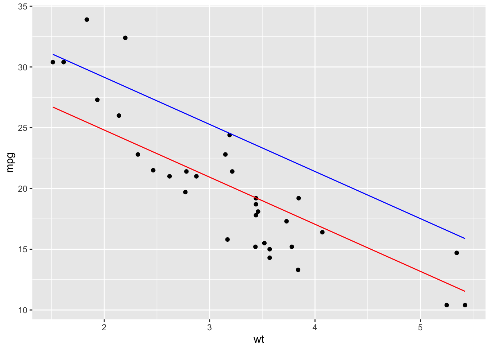
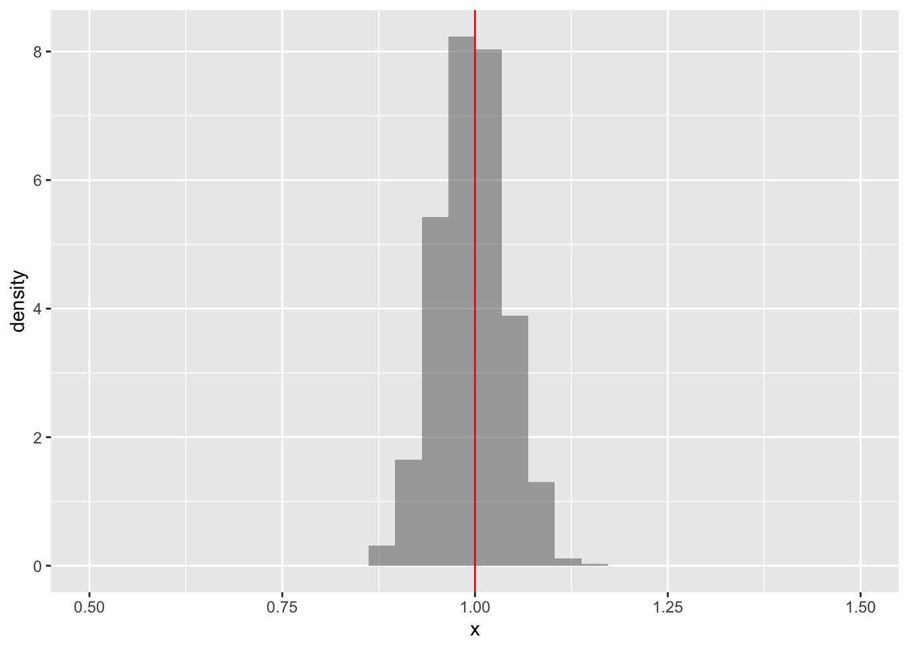
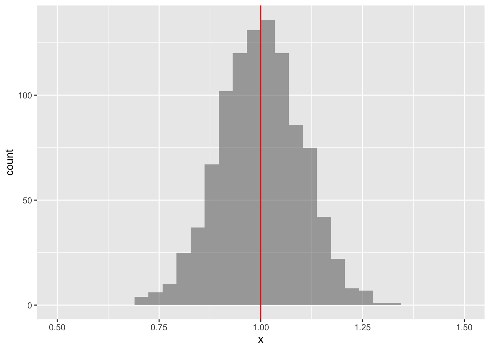
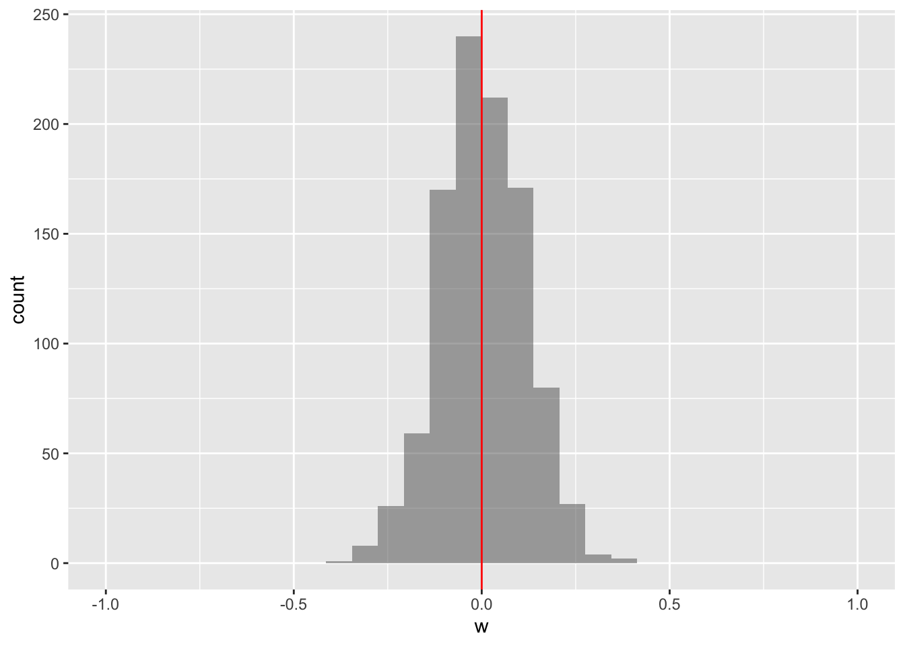
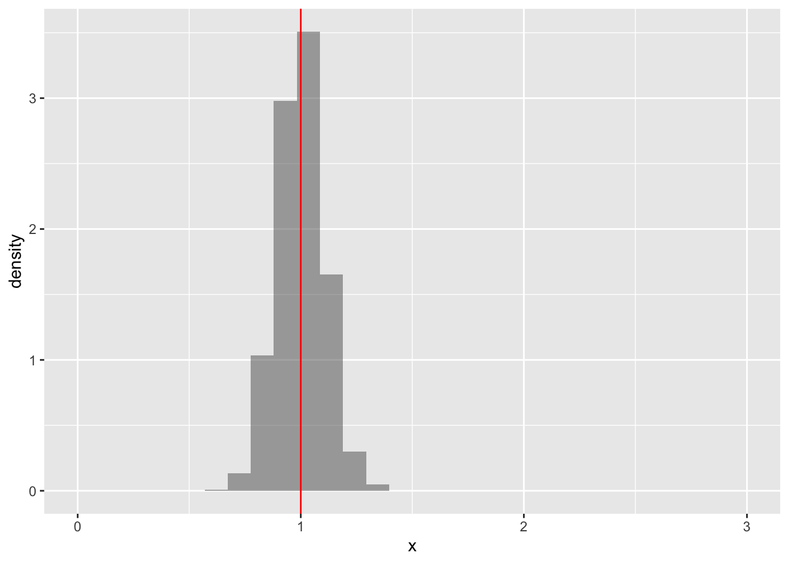
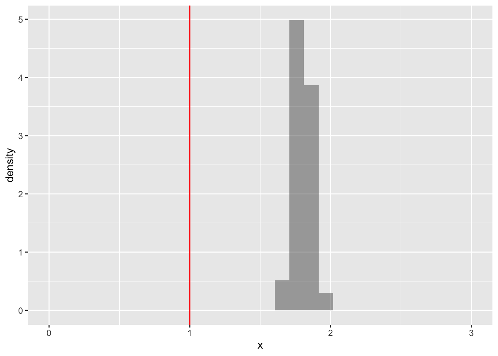
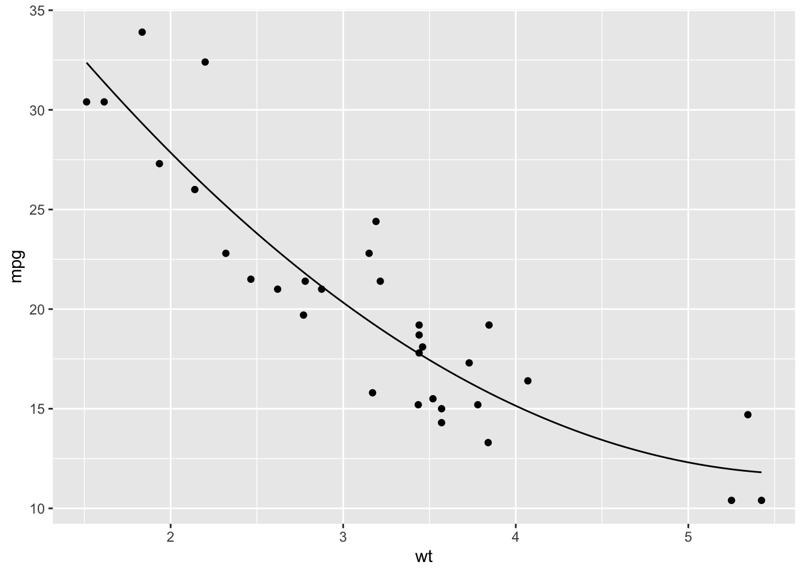
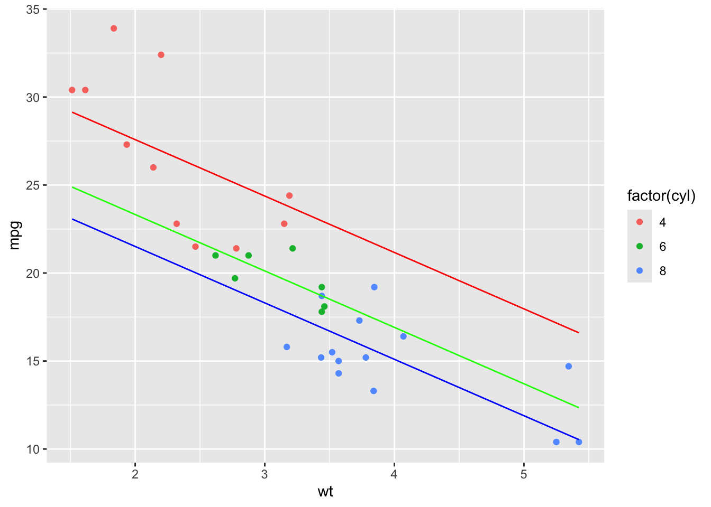
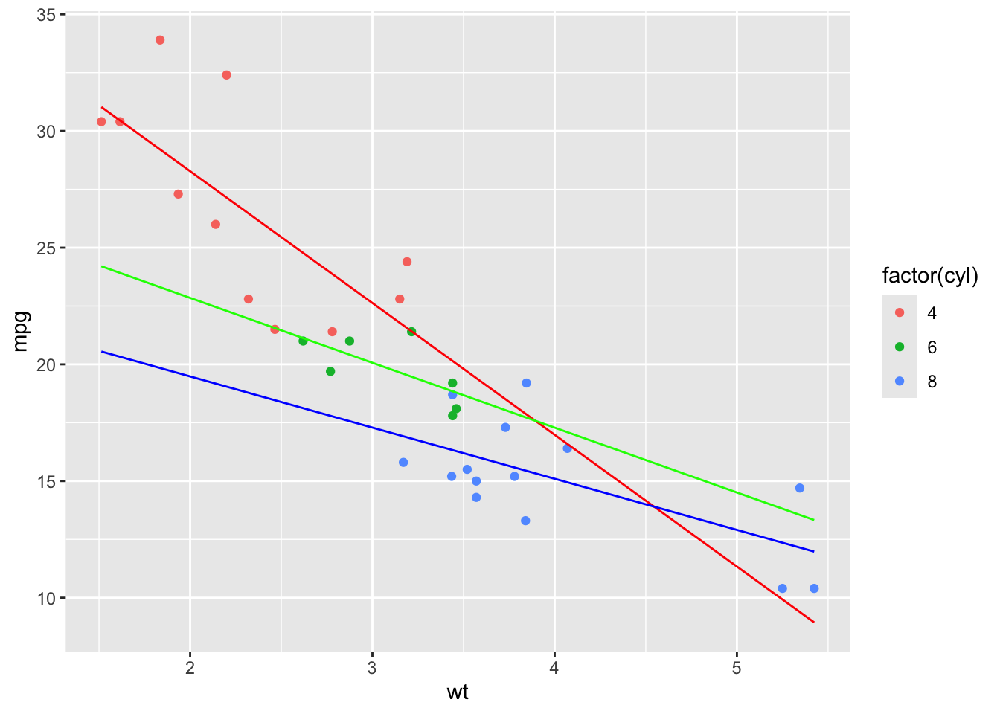

library(AER)
library(mosaic)
library(tidyverse)
library(texreg)
#> Error in `library()`:
#> ! 'texreg' という名前のパッケージはありません
set.seed(2000)8 重回帰
8.1 最小二乗推定量
説明変数として \(x\) と \(w\) の2つを考えた線形モデルを考える. \[ y = \alpha + \beta x +\gamma w+ u \]
このようなモデルを重回帰モデルといい, 暗黙に次の仮定を置いている.
- \((w_i, x_i,y_i)\) は独立同一分布にしたがう.
- 誤差項の期待値はゼロである. \(E[u_i]=0\) である.
- 誤差項 \(u_i\) は説明変数 \((x_i, w_i)\) に対して独立である.
- 誤差項 \(u_i\) は正規分布にしたがう.
- 説明変数間に多重共線性は存在しない. つまり \(x_i\) は \(w_i\) の一次変換で表せない.
このとき最小二乗推定量は一致で, 不偏であり, 正規分布にしたがうことが知られている.
次のデータを考える.
data(mtcars)
inspect(mtcars)
#>
#> quantitative variables:
#> name class min Q1 median Q3 max mean sd
#> 1 mpg numeric 10.400 15.42500 19.200 22.80 33.900 20.090625 6.0269481
#> 2 cyl numeric 4.000 4.00000 6.000 8.00 8.000 6.187500 1.7859216
#> 3 disp numeric 71.100 120.82500 196.300 326.00 472.000 230.721875 123.9386938
#> 4 hp numeric 52.000 96.50000 123.000 180.00 335.000 146.687500 68.5628685
#> 5 drat numeric 2.760 3.08000 3.695 3.92 4.930 3.596563 0.5346787
#> 6 wt numeric 1.513 2.58125 3.325 3.61 5.424 3.217250 0.9784574
#> 7 qsec numeric 14.500 16.89250 17.710 18.90 22.900 17.848750 1.7869432
#> 8 vs numeric 0.000 0.00000 0.000 1.00 1.000 0.437500 0.5040161
#> 9 am numeric 0.000 0.00000 0.000 1.00 1.000 0.406250 0.4989909
#> 10 gear numeric 3.000 3.00000 4.000 4.00 5.000 3.687500 0.7378041
#> 11 carb numeric 1.000 2.00000 2.000 4.00 8.000 2.812500 1.6152000
#> n missing
#> 1 32 0
#> 2 32 0
#> 3 32 0
#> 4 32 0
#> 5 32 0
#> 6 32 0
#> 7 32 0
#> 8 32 0
#> 9 32 0
#> 10 32 0
#> 11 32 0回帰分析の結果は以下である.
fm <- lm(mpg ~ wt + hp, data = mtcars)
summary(fm)
#>
#> Call:
#> lm(formula = mpg ~ wt + hp, data = mtcars)
#>
#> Residuals:
#> Min 1Q Median 3Q Max
#> -3.941 -1.600 -0.182 1.050 5.854
#>
#> Coefficients:
#> Estimate Std. Error t value Pr(>|t|)
#> (Intercept) 37.22727 1.59879 23.285 < 2e-16 ***
#> wt -3.87783 0.63273 -6.129 1.12e-06 ***
#> hp -0.03177 0.00903 -3.519 0.00145 **
#> ---
#> Signif. codes: 0 '***' 0.001 '**' 0.01 '*' 0.05 '.' 0.1 ' ' 1
#>
#> Residual standard error: 2.593 on 29 degrees of freedom
#> Multiple R-squared: 0.8268, Adjusted R-squared: 0.8148
#> F-statistic: 69.21 on 2 and 29 DF, p-value: 9.109e-12回帰係数は coef で計算できる.
(bhat <- coef(fm))
#> (Intercept) wt hp
#> 37.22727012 -3.87783074 -0.03177295この係数は他の説明変数に回帰させたときの残差をもとめて, それを説明変数に回帰したときの係数である.
resid.wt <- resid(lm(wt ~ hp, data = mtcars))
coef(lm(mpg ~ resid.wt, data = mtcars))[2]
#> resid.wt
#> -3.877831
resid.hp <- resid(lm(hp ~ wt, data = mtcars))
coef(lm(mpg ~ resid.hp, data = mtcars))[2]
#> resid.hp
#> -0.03177295予測値: \(\hat{y_i}=\hat\alpha +\hat\beta x_i +\hat\gamma w_i\) は fitted で計算できる.
head(fitted(fm))
#> Mazda RX4 Mazda RX4 Wag Datsun 710 Hornet 4 Drive
#> 23.57233 22.58348 25.27582 21.26502
#> Hornet Sportabout Valiant
#> 18.32727 20.47382残差: \(\hat u_i = y_i - \hat y_i\) は resid で計算できる.
head(resid(fm))
#> Mazda RX4 Mazda RX4 Wag Datsun 710 Hornet 4 Drive
#> -2.5723294 -1.5834826 -2.4758187 0.1349799
#> Hornet Sportabout Valiant
#> 0.3727334 -2.3738163残差自乗和: \(RSS = \sum \hat u_i^2\) は deviance で計算できる.
sum(resid(fm)^2)
#> [1] 195.0478
deviance(fm)
#> [1] 195.0478観測数を \(n\), 説明変数の数を \(k\) として, 自由度は \(n-k-1\) であり, \(df.residual\) 計算できる.
nobs(fm)
#> [1] 32
df.residual(fm)
#> [1] 29回帰の標準誤差: \(\hat\sigma =\sqrt{RSS/(n-k-1)}\) (\(k=2\)) は以下で計算できる
sqrt(deviance(fm) / df.residual(fm))
#> [1] 2.593412
summary(fm)$sigma
#> [1] 2.593412決定係数: \(R^2 = 1-RSS/\sum \hat (y_i-\bar y)^2\) は以下で計算できる
1 - deviance(fm) / with(mtcars, sum((mpg - mean(mpg))^2))
#> [1] 0.8267855
summary(fm)$r.squared
#> [1] 0.8267855
mosaic::rsquared(fm)
#> [1] 0.8267855修正済み決定係数: \(\bar{R}^2 = 1-(RSS/(n-k-1))/(\sum \hat (y_i-\bar y)^2 /(n-1))\) (\(k=2\)) は以下で計算できる
1 - (deviance(fm) / df.residual(fm)) / with(mtcars, var(mpg))
#> [1] 0.8148396
summary(fm)$adj.r.squared
#> [1] 0.81483968.1.1 予測
\(wt=3\), \(hp = 10\) のときの予測値は以下である.
fn <- makeFun(fm)
fn(wt = 3, hp = 10)
#> 1
#> 25.27605作図の際, \(hp=10\) のとき, 平均のもとの作図は作図は次のようにする. 青線が\(hp=10\)のときであり, 赤線が平均のときである.
mhp <- with(mtcars, mean(hp))
gf_point(mpg ~ wt, data = mtcars) |>
gf_fun(fn(wt, hp = 10) ~ wt, color = "blue") |>
gf_fun(fn(wt, hp = mhp) ~ wt, color = "red")
8.2 除去変数バイアス
真のモデルが説明変数 x の単回帰モデルであるが, x と正の相関がある w も観測できるとする.
simdata1 <- function(N = 100) {
w <- rnorm(N, mean = 5, sd = 2)
x <- w + rnorm(N, mean = 10, sd = 1)
y <- 1 + x + rnorm(N)
data.frame(w, x, y)
}このときの正しく推定した場合のシミュレーション結果である. 説明変数 x の係数の基本統計量と分布は以下である.
siml <- do(1000) * lm(y ~ x, data = simdata1(100))
favstats(~x, data = siml)gf_dhistogram(~x, data = siml) |>
gf_lims(x = c(0.5, 1.5)) |>
gf_vline(xintercept = 1, color = "red")
次に説明変数 w を付け加えたシミュレーション結果である. 説明変数 x の係数の基本統計量と分布は以下である.
siml <- do(1000) * lm(y ~ x + w, data = simdata1(100))
favstats(~x, data = siml)gf_histogram(~x, data = siml) |>
gf_lims(x = c(0.5, 1.5)) |>
gf_vline(xintercept = 1, color = "red")
分散が大きくなっているが, 不偏である.
説明変数 w の基本統計量係数の分布は以下である.
favstats(~w, data = siml)gf_histogram(~w, data = siml) |>
gf_lims(x = c(-1, 1)) |>
gf_vline(xintercept = 0, color = "red")
無関係な説明変数の分布は0の周りで不偏である. 両結果をまとめると, 多少推定が非効率になるが, 母集団モデルと無関係の変数を説明変数に加えても問題はおきない.
逆に必要な説明変数を重回帰モデルに入れなかったら, 最小二乗推定量は通常バイアスがかかる. 次のことが知られている:
- 説明変数同士が無相関ならバイアスはない.
- 説明変数同士の相関と, 含めている説明変数と被説明変数の相関が同じ符号なら, 正のバイアスが存在する.
- 説明変数同士の相関と含めている説明変数と被説明変数の相関が異なる符号なら, 負のバイアスが存在する.
説明変数同士が正の相関の場合を考える.
simdata2 <- function(N = 100) {
w <- rnorm(N, mean = 5, sd = 2)
x <- w + rnorm(N, mean = 10, sd = 1)
y <- 1 + x + w + rnorm(N)
data.frame(w, x, y)
}正しい重回帰モデルの変数 \(x\) の傾きの分布は以下であり, 不偏である.
siml <- do(1000) * lm(y ~ x + w, data = simdata2(100))
gf_dhistogram(~x, data = siml) |>
gf_lims(x = c(0, 3)) |>
gf_vline(xintercept = 1, color = "red")
単回帰モデルは不偏でなく正のバイアスが発生している.
siml <- do(1000) * lm(y ~ x, data = simdata2(100))
gf_dhistogram(~x, data = siml) |>
gf_lims(x = c(0, 3)) |>
gf_vline(xintercept = 1, color = "red")
まとめると, 真のモデルより多くの説明変数を加えても不偏性は保たれるが, 真のモデルより少ない説明変数の場合, 不偏性は保たれない. 多めの説明変数を加えたほうが望ましい結果が得られる.
8.3 回帰モデルの拡張
8.3.1 自乗項
fm <- lm(mpg ~ wt + I(wt^2), data = mtcars)
summary(fm)
#>
#> Call:
#> lm(formula = mpg ~ wt + I(wt^2), data = mtcars)
#>
#> Residuals:
#> Min 1Q Median 3Q Max
#> -3.483 -1.998 -0.773 1.462 6.238
#>
#> Coefficients:
#> Estimate Std. Error t value Pr(>|t|)
#> (Intercept) 49.9308 4.2113 11.856 1.21e-12 ***
#> wt -13.3803 2.5140 -5.322 1.04e-05 ***
#> I(wt^2) 1.1711 0.3594 3.258 0.00286 **
#> ---
#> Signif. codes: 0 '***' 0.001 '**' 0.01 '*' 0.05 '.' 0.1 ' ' 1
#>
#> Residual standard error: 2.651 on 29 degrees of freedom
#> Multiple R-squared: 0.8191, Adjusted R-squared: 0.8066
#> F-statistic: 65.64 on 2 and 29 DF, p-value: 1.715e-11fn <- makeFun(fm)
gf_point(mpg ~ wt, data = mtcars) |>
gf_fun(fn(wt) ~ wt)
8.3.2 ダミー変数
fm <- lm(mpg ~ wt + factor(cyl), data = mtcars)
summary(fm)
#>
#> Call:
#> lm(formula = mpg ~ wt + factor(cyl), data = mtcars)
#>
#> Residuals:
#> Min 1Q Median 3Q Max
#> -4.5890 -1.2357 -0.5159 1.3845 5.7915
#>
#> Coefficients:
#> Estimate Std. Error t value Pr(>|t|)
#> (Intercept) 33.9908 1.8878 18.006 < 2e-16 ***
#> wt -3.2056 0.7539 -4.252 0.000213 ***
#> factor(cyl)6 -4.2556 1.3861 -3.070 0.004718 **
#> factor(cyl)8 -6.0709 1.6523 -3.674 0.000999 ***
#> ---
#> Signif. codes: 0 '***' 0.001 '**' 0.01 '*' 0.05 '.' 0.1 ' ' 1
#>
#> Residual standard error: 2.557 on 28 degrees of freedom
#> Multiple R-squared: 0.8374, Adjusted R-squared: 0.82
#> F-statistic: 48.08 on 3 and 28 DF, p-value: 3.594e-11fn <- makeFun(fm)
gf_point(mpg ~ wt, color = ~factor(cyl), data = mtcars) |>
gf_fun(fn(wt, cyl = "4") ~ wt, color = "red") |>
gf_fun(fn(wt, cyl = "6") ~ wt, color = "green") |>
gf_fun(fn(wt, cyl = "8") ~ wt, color = "blue")
8.3.3 交差項
fm <- lm(mpg ~ wt + factor(cyl) + wt:factor(cyl), data = mtcars)
summary(fm)
#>
#> Call:
#> lm(formula = mpg ~ wt + factor(cyl) + wt:factor(cyl), data = mtcars)
#>
#> Residuals:
#> Min 1Q Median 3Q Max
#> -4.1513 -1.3798 -0.6389 1.4938 5.2523
#>
#> Coefficients:
#> Estimate Std. Error t value Pr(>|t|)
#> (Intercept) 39.571 3.194 12.389 2.06e-12 ***
#> wt -5.647 1.359 -4.154 0.000313 ***
#> factor(cyl)6 -11.162 9.355 -1.193 0.243584
#> factor(cyl)8 -15.703 4.839 -3.245 0.003223 **
#> wt:factor(cyl)6 2.867 3.117 0.920 0.366199
#> wt:factor(cyl)8 3.455 1.627 2.123 0.043440 *
#> ---
#> Signif. codes: 0 '***' 0.001 '**' 0.01 '*' 0.05 '.' 0.1 ' ' 1
#>
#> Residual standard error: 2.449 on 26 degrees of freedom
#> Multiple R-squared: 0.8616, Adjusted R-squared: 0.8349
#> F-statistic: 32.36 on 5 and 26 DF, p-value: 2.258e-10fm0 <- lm(mpg ~ wt * factor(cyl), data = mtcars)
summary(fm0)
#>
#> Call:
#> lm(formula = mpg ~ wt * factor(cyl), data = mtcars)
#>
#> Residuals:
#> Min 1Q Median 3Q Max
#> -4.1513 -1.3798 -0.6389 1.4938 5.2523
#>
#> Coefficients:
#> Estimate Std. Error t value Pr(>|t|)
#> (Intercept) 39.571 3.194 12.389 2.06e-12 ***
#> wt -5.647 1.359 -4.154 0.000313 ***
#> factor(cyl)6 -11.162 9.355 -1.193 0.243584
#> factor(cyl)8 -15.703 4.839 -3.245 0.003223 **
#> wt:factor(cyl)6 2.867 3.117 0.920 0.366199
#> wt:factor(cyl)8 3.455 1.627 2.123 0.043440 *
#> ---
#> Signif. codes: 0 '***' 0.001 '**' 0.01 '*' 0.05 '.' 0.1 ' ' 1
#>
#> Residual standard error: 2.449 on 26 degrees of freedom
#> Multiple R-squared: 0.8616, Adjusted R-squared: 0.8349
#> F-statistic: 32.36 on 5 and 26 DF, p-value: 2.258e-10fn <- makeFun(fm)
gf_point(mpg ~ wt, color = ~factor(cyl), data = mtcars) |>
gf_fun(fn(wt, cyl = "4") ~ wt, color = "red") |>
gf_fun(fn(wt, cyl = "6") ~ wt, color = "green") |>
gf_fun(fn(wt, cyl = "8") ~ wt, color = "blue")
8.4 エフ検定
仮想的に以下のようにデータを生成する.
N <- 100
x <- runif(N)
w <- sample(c("H", "T"), N, replace = TRUE)
y <- 10 + 2 * x + ifelse(w == "H", x - 2, -x) + rnorm(N)
data <- data.frame(w, x, y)今, 帰無仮説のモデルが \[ y = \alpha + \beta x + u \] で, 対立仮説のモデルが \[ y = \alpha + \beta x + \gamma w + \delta xw + u \] のときの検定を実施したい. つまり係数が \(\gamma = \delta = 0\) という帰無仮説である.
R でF値は次のようにして算出する.
fm0 <- lm(y ~ x, data = data)
fm1 <- lm(y ~ x * w, data = data)
dof <- df.residual(fm1)
q <- df.residual(fm0) - dof
SSR0 <- deviance(fm0)
SSR <- deviance(fm1)
(F <- ((SSR0 - SSR) / q) / (SSR / dof))
#> [1] 20.44475この時のP値は以下である.
1 - pf(F, df1 = q, df2 = dof)
#> [1] 4.011013e-08これらの手順はコマンド anova を用いれば簡単に実現できる.
anova(fm0, fm1)特に全ての係数がゼロ \(\beta = \gamma = \delta = 0\) という帰無仮説のときの検定統計量はエフ値という.
summary(fm1)$fstatistic
#> value numdf dendf
#> 20.75858 3.00000 96.00000
(rsquared(fm1) / 3) / ((1 - rsquared(fm1)) / dof)
#> [1] 20.758588.5 作表
基本統計量:
mtcars |> select(mpg, wt, hp, cyl) |> gather(key, value) |>
group_by(key) |>
summarize(mean = mean(value),
sd = sd(value),
max = max(value),
min = min(value),
n = n()) |> kable()
#> Error in `kable()`:
#> ! 関数 "kable" を見つけることができませんでしたfm1 <- lm(mpg ~ wt + hp, data = mtcars)
fm2 <- lm(mpg ~ wt * hp, data = mtcars)
fm3 <- update(fm2, .~. + factor(cyl))回帰分析の比較表はパッケージ texreg のコマンド htmlreg を用いればよい.
htmlreg(list(fm1, fm2, fm3))
#> Error in `htmlreg()`:
#> ! 関数 "htmlreg" を見つけることができませんでした